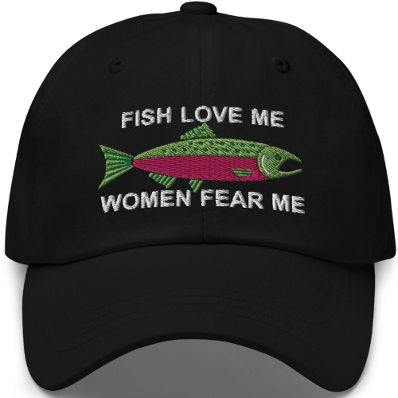

Dive into the parallel story to UNDERTALE! Fight or spare your way through action-packed battles as you explore a mysterious world alongside an endearing cast of new and familiar characters. Chapters 1-4 will be available at launch, with more planned as free updates!